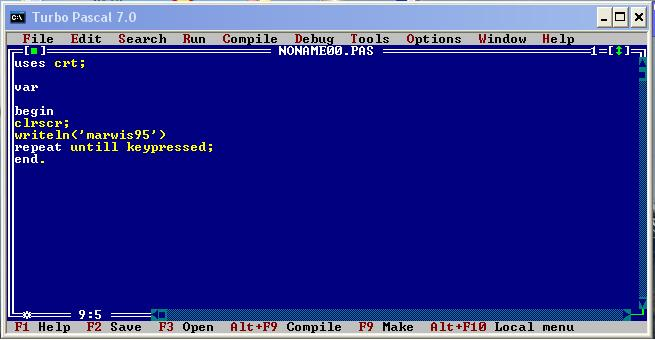

Pascal jest doskona³ym narzêdziem do robienia programów. Polega to na tym, ¿e najpierw
piszemy kod programu, a potem, ¿eby go przerobiæ na plik wykonywalny (z koñcówk¹ EXE)
musimy go skompilowaæ. Wszystkie te czynnoœci wykonujemy za pomoc¹ programu TURBO
PASCAL. Po w³¹czeniu widzimy najczêœciej niebieski ekran. Z polecenia FILE i SAVE, zachowujemy
pliki (tak jak w windowsie). Aby uruchomiæ napisany przez nas kod, u¿ywamy polecenia RUN
i klikamy w pierwsz¹ zak³adkê (RUN). Aby go skompilowaæ, klikamy w COMPILE i sprawdzamy,
czy widnieje tam napis DESTINATION DISK.
Jak jest, klikamy na COMPILE.
Uses crt-jest to okreœlanie modu³u
Var(ang.Variable-Zmienna)tutaj definiuje siê zmiene(np.: a:integer;)
Clrscr-czyszczenie ekranu
Writeln-wypisz w nowej linijce
Write-tylko wypisz
Repeat untill keypressed-Na ekranie wyœwietla siê (np. wynik) a¿ do naciœniêcia dowolnego klawisza. Najlepiej sam spróbuj napisaæ program bez tego i zobacz jak bêdzie wygl¹da³
Begin i End-pocz¹tek i konie. UWAGA!!!ostatnie end jest z kropk¹(np.: End.)
W pascalu prawie ka¿da linijka kodu koñczy siê œrednikiem;